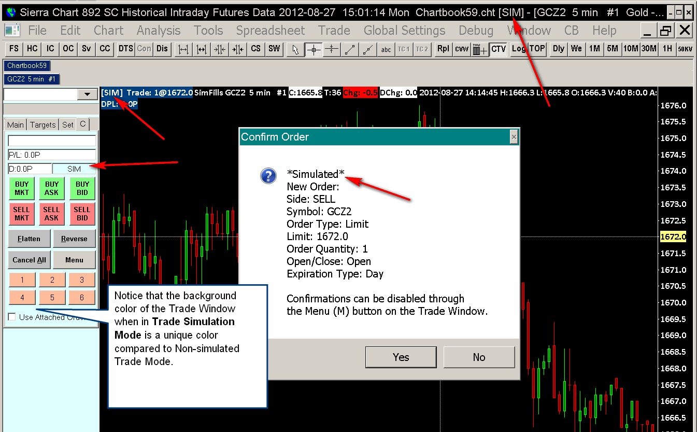

Overview of Trading
- Terminology
- Essential Settings for Trading
- Difference between Simulated and Non-Simulated Mode
- Understanding Non-simulated Trading With an External Simulation Account
- Using Sierra Chart Trade Simulation Mode
- Basic Trading and the Trade Window
- Chart Trading and the Chart DOM
- Viewing Orders and Positions
- Trading Different Symbol Compared with Symbol of Chart
- Trading Different Trading Accounts
- Maintaining Long and Short Position for Same Symbol
- Notification of Open Orders when Exiting Sierra Chart
- Indication to Exchange for Automated Orders
- Sierra Chart Configuration for Most Low Response Time Trading
- Procedure to Handle Unexpected Trading Issue
- Trade Performance Analysis
Sierra Chart provides complete trading functionality. Below you will find information to get you started with trading in Sierra Chart.
Terminology
This section defines basic trading terminology used in this documentation and with trading in general.
- Trade Order/Order: To provide an instruction to your trading service or to an exchange to buy or sell, you will submit what is called an Order which contains all of the details of your instruction. If it is accepted, the order becomes Open and is in a working state. If it is no longer working the status will be Canceled, Error, or Filled.
- Order Fill/Fill: When an order fills or partially fills, then this is known as an Order Fill or Fill. Sierra Chart keeps track of individual order fills. These are held in the Trade >> Trade Activity Log. This is a persistent log.
When an order fill occurs, the Trade Position for the symbol is adjusted to reflect the fill. For example, if there is a fill for a Buy order of quantity 1, then the Trade Position Quantity for the symbol will be increased by 1. This adjustment is performed internally by Sierra Chart. Also, in most cases, the external Trading service, for non-simulated trading, will provide an update for the Trade Position for the symbol. When this update is received after an order fill, the internal Trade Position quantity is synchronized to this Trade Position Quantity from the Trading service to ensure it matches. - Trade Position/Position: When an order fills, this results in a Position if you currently did not have a Position in the market/symbol being traded. Usually the documentation makes reference to this as a Trade Position to make it clear that we are referring to a Position related to trading.
A Position indicates how many shares/contracts you are long or short in a particular market and trading account. This will either be a positive number or a negative number.
A positive number indicate you are long the market. A negative number indicates you are short the market. Sierra Chart will never make reference to a Position as an order. It is known as a Trade Position. When you do not have a Position in a market, this is known as being Flat the market.
It is only possible to have one Position per Symbol and Trade Account. If you want to maintain both a long and short position for the same symbol, it must be in a different Trade Account. Refer to Selecting Trade Account. - Trade: A Trade takes place when an order fills. If you were currently flat the market for a particular symbol, then this Trade will establish a new Trade Position.
- Bid: In every market for a particular symbol, there is the Bid price which establishes the highest price of the buy limit orders in the market.
- Ask/Offer: In every market for a particular symbol, there is the Ask or Offer price which establishes the lowest price of the sell limit orders in the market.
- Attached Orders: An order can have child orders and these are known as Attached Orders. Attached Orders will be Target and/or Stop orders that are used to lock in a profit at a certain price and limit the loss at a certain price. These Attached Orders become active and are capable of filling only when the parent order to which they are attached to, fills.
- OCO: This refers to Order Cancels Order or One Cancels Other. When there are orders in an OCO group, when one of them is filled or is canceled manually by the user, the other order will be canceled. In the case of a partial fill of one of the orders, depending upon the type of OCO order, the other order will be canceled or its quantity will be reduced by the amount of the fill of the other order that partially filled.
- Bracket Order: A bracket order is another term which describes three orders. This consists of a parent/main order and 2 Attached Orders. The Attached Orders consist of a Limit order and a Stop order. The Limit and the Stop order are in an OCO group. OCO is documented in this section.
This Bracket Order can be managed on the Server side or on the Client side. If the Server does not support management of Bracket Orders, but supports server-side OCO orders, then only the OCO portion of the order is managed on the Server.
The term Bracket Order is not entirely descriptive because a Bracket order could just be considered an OCO order which may or may not be linked with a parent order. However, in this documentation when this term is used, it means an order which consists of three orders as described. - OCO Order: An OCO order consists of two orders in an OCO group. See the definition above for OCO. An OCO order can be a completely independent order of one of the OCO order types documented on the Order Types page. Or the OCO order can be part of a Bracket Order and is the Attached Orders attached to a parent order.
Essential Settings for Trading
This section describes settings that you should verify are correct for the trading functionality to work properly. In almost all cases, these are already preconfigured and set correctly from the Global Symbol Settings.
- Essential: Select Chart >> Chart Settings >> Symbol on the menu. Verify that the Symbol Settings >> Tick Size and Symbol Settings >> Price Display Format are set properly for the Symbol of the chart.
The Tick Size represents the smallest increment that the symbol trades in.
The Price Display Format is the number of decimal places that the symbol requires to be displayed or the denominator for a fraction display.
Note: If the Tick Size is set incorrectly, order prices may be wrong. - To control the format for the Profit/Loss display on the Trade Position line on a chart and the Profit/Loss display on the Trade Window for the chart, select Chart >> Chart Settings >> Trading on the menu.
The Profit/Loss Format can be set to several formats. Refer to the image below.
{kind=link}
{kind=link}
Difference between Simulated and Non-Simulated Trading Modes
{kind=link}
When performing trading in Sierra Chart, there are two trade modes. Simulated and Non-Simulated.
Trade Simulation Mode is the default. This is a global setting. This can be activated or deactivated by adding or removing a checkmark to/from Trade >> Trade Simulation Mode On on the menu.
To be in Trade Simulation Mode, make certain there is a checkmark by Trade Simulation Mode On. When Sierra Chart is in Trade Simulation Mode, all trades will be simulated.
If Sierra Chart is not in Trade Simulation Mode, then trades will be sent to the connected Trading service, assuming it is connected to a valid Trading service. However, this does not necessarily mean that the trades are actually live because Sierra Chart may be connected to a simulation account you have with your Broker/Trading service.
Whether Sierra Chart is in Trade Simulation Mode or your order requests are sent to the connected trading service, the trading functionality and interfaces in Sierra Chart work identically. There are no differences.
Although, live trading is different in that trades are handled by a remote server so trading is not necessarily instantaneous and works 100% perfectly as it does in trade simulation mode. In most cases Sierra Chart has a very reliable and well engineered interface to the live trading servers it works with especially where the FIX protocol is used.
When using sub instances of Sierra Chart, and the main/server instance has Trade Simulation Mode enabled, and a sub instance has Trade Simulation Mode disabled, the orders will be sent to the main instance from the sub instance and they will be simulated within the main instance.
How to Know You Are in Trade Simulation Mode
- The title bar contains: [SIM].
- The Trade Window for the chart will have a different background color. This is set through Global Settings >> Graphics Settings >> Colors and Widths >> Chart Trade Window Background - Simulation Mode. Set this to a color which cause you to recognize very clearly Sierra Chart is in trade simulation mode.
- Order confirmations will say *Simulated* at the top.
- The Trade Window Trade Account list box will have accounts which have the format Sim#.
- The chart trade mode box at the top left of the chart will also be prefixed with [Sim]. The color of the box is set according to Global Settings >> Graphics Settings >> Colors and Widths >> Chart Trade Mode Box - Simulation.
- The Trade Simulation Mode Control Bar button (TSM) will be pushed in. This button can be colored as well. Refer to Control Bar Button Properties to custom color it or change its caption.
- Refer to the image above for an example of all of this.
Control Bar Button for Trade Simulation Mode
To add a control bar button for Trade >> Trade Simulation Mode, refer to Customizing Control Bar.
Understanding Non-simulated Trading With an External Simulation Account
In Sierra Chart, when Trade >> Trade Simulation Mode On is disabled, then orders are sent to the connected Trading service. This is considered non-simulated/live trading.
Although Sierra Chart may be connected to a simulated account with the Trading service you are using and therefore the orders will actually be simulated through that Trading service.
Using Sierra Chart Trade Simulation Mode
Sierra Chart has a complete Trade Simulation Mode feature. When using Trade Simulation Mode, all of your trades will be simulated. Trades from automated trading systems will also be simulated when in this mode. For complete documentation, refer to the Trade Simulation documentation.
Basic Trading and the Trade Window
For instructions to enter New orders, Modify orders, and Cancel orders, using the Trade Window and for complete information about the Trade Window, refer to the Basic Trading and the Trade Window page.
Chart Trading and the Chart DOM
For instructions to use the chart based trading, the Chart DOM , and the Trade DOM features, refer to the Chart Trading and the Chart DOM page. Submitting new orders, modifying orders, and canceling orders is all explained.
Viewing Orders and Positions
When you enter an order to Buy or Sell, this is called an Order and it will be filled either by your Trading service or by the Sierra Chart Trade Simulation system, if Sierra Chart is in Trade Simulation Mode. There either can be one fill or multiple fills until it is fully filled to the quantity of the order. To view your orders including order Status, refer to the Trade Orders Window section on the Trading Information Windows page.
When an order is filled, this results in what is called a Trade Position. To view the current Trade Positions, refer to the Trade Positions tab section on the Trading Information Windows page.
Open Orders and the current Trade Position for a Symbol and Trade Account can also be viewed directly on a chart for that symbol. For instructions, refer to the Chart Trading and the Chart DOM page.
The Trade Window also displays the current Trade Position for the Symbol and Trade Account of the Chart or Trade DOM that the Trade Window is for.
A detailed log of all historical trading activity is in the Trade >> Trade Activity Log.
Trading Different Symbol Compared with Symbol of Chart
Follow the instructions below to trade a symbol different than the symbol of the chart.
For example, you may want to trade an options symbol and chart the underlying market.
Or you may want to use one of the Sierra Chart Forex symbols and trade a different corresponding Forex symbol with the Trading service you are using.
- Select Chart >> Chart Settings.
- In the Trade and Current Quote Symbol box, enter the particular symbol that you want to trade. This symbol should have some relationship to the symbol of the chart but it is the actual symbol that will be traded. This needs to be a symbol supported by the Trading service you are using. For additional information, refer to Trade and Current Quote Symbol.
- Press OK.
- The data in Window >> Current Quote Window will be for this Trade and Current Quote Symbol and also the last trade price on the right side of the chart and the market depth data will be for this symbol as well. In an upcoming version, there will be the capability for the symbol to be a trade only symbol.
Trading Different Trading Accounts
Sierra Chart supports using multiple trading accounts which are accessible on the current connection to the external Trading service. To do this, requires selecting the Trade Account you want to trade on the Trade Window for a Chart or Trade DOM.
Therefore, it is supported to trade different trading accounts from within Sierra Chart.
It is not supported to trade from a single instance of Sierra Chart different Trade Accounts which are part of different trading services. For this requires that you use multiple instances of Sierra Chart. Even in the case when using multiple instances of Sierra Chart, orders for different Trade Accounts on different Trading services, need to be entered separately.
It is supported to share the market data and trading functionality from a single connection to an external Trading and/or Data service, with other instances of Sierra Chart. Refer to Using DTC Server for Data and Trading in Another Sierra Chart Instance.
Maintaining Long and Short Position for Same Symbol
In Sierra Chart, if you want to maintain both a Long and Short Position for the same symbol at the same time, then this is only possible by establishing a Short Position for the symbol in one Trade Account and a Long Position for the symbol in another Trade Account.
Sierra Chart does not have the ability to maintain both a Long and Short Position for the same Symbol in the same Trade Account.
In the case of Trade Simulation Mode, there are up to 400 Simulation accounts available. Therefore, there are plenty of accounts available to use.
In the case of non-simulated trading, you will need to contact the Trading service you are using to have additional accounts assigned if needed.
To set the Trade Account to use, refer to Selecting Trade Account.
Notification of Open Orders when Exiting Sierra Chart
When exiting from Sierra Chart through File >> Exit or using the X button at the top right of the main program window, if there any non-simulated Open orders listed in the Trade >> Trade Positions Window, then a prompt will be displayed at the time Sierra Chart is exiting letting you know this is the case and confirming if you want to exit or not.
Indication to Exchange for Automated Orders
Most of the supported Trading services, allow Sierra Chart to identify whether an order is considered manual or automated. Sierra Chart does provide this indication to all trading services which support this indication, including the direct order routing services. In the case where FIX connectivity, This is the ManualOrderIndicator (1028) tag. It is set to true if it is a manual order. If it is an automated order, it is set to false.
Automated orders are orders submitted from automated trading systems, or from the ACSIL Trading functions or Attached Orders. All other orders are considered manual orders.
So there is a proper indication provided to the external Trading service as to whether an order is a manual or automated order.
Sierra Chart Configuration for Most Low Response Time Trading
Sierra Chart is a very powerful and fast charting and trading platform. It has numerous features and a lot of capabilities through its studies to perform advanced analysis and provide charts which can span a long period of time.
However, there are configurations you can use, which can create a high CPU load within the Sierra Chart process and cause it to become less responsive at times.
You definitely do not want to be trading live from an instance of Sierra Chart, which is running under a high CPU load because this reduces the response times for submitting and processing orders. Sierra Chart typically is able to submit orders out to the external trading service in under 40-50 µs. It is designed for very low latency trading. However, with additional load this will take longer.
It is supported to run multiple instances of Sierra Chart to distribute processing load. This is accessed through File >> New Instance. For complete documentation, refer to Using DTC Server for Data and Trading in Another Sierra Chart Instance.
You can also install multiple other instances of Sierra Chart on the same computer, and have them access the Trading and Data servers directly. This is all possible by using the Teton Order Routing Service and the Denali Exchange Data Feed.
If your Sierra Chart configuration is using a high CPU load which would be noticed because Sierra Chart seems less responsive at times, then the following configuration is recommended.
Run at least two instances of Sierra Chart as follows:
- In the main instance of Sierra Chart, only open those Trading DOM windows and charts, which you are submitting orders from. In the case of charts, set the Days to Load setting as small as possible. You will trade from this main instance of Sierra Chart or you can use a separate sub instance for trading as explained below
- Run a sub instance through File >> New Instance. In this instance create all of the charts you require and use the studies you need, for your more advanced and longer-term analysis.
- Run additional instances of Sierra Chart as needed to distribute processing load for your more advanced analysis.
- You may want to trade from a sub instance of Sierra Chart as well and leave the main instance for market data processing. In the case of data feeds which are based on the DTC Protocol, which includes all of Sierra Chart's own data feeds, market data processing is done on a background thread. In this case it does not help to use a sub instance for trading. You can just trade from the main instance. Although in any case market data processing is always very efficient so it really does not create a noticeable CPU load in most cases.
But for other data feeds, it potentially could help to use a sub instance for trading but not necessarily. If you do want to use a sub instance for trading, simply run another sub instance with File >> New Instance. But it is generally preferred to trade from the main instance which is directly connected to the data feed. - In any of the Charts or Trading DOMs you are trading from, in order to have the very fastest display updates, you will want to reduce the Chart Update Interval setting.
Procedure to Handle Unexpected Trading Issue
In the case where something unexpected happens when you are trading from Sierra Chart, or there is information displayed or not displayed in any of the Trade Information Windows which does not make sense, it is important to follow a safe and reasonable procedure. The procedure is explained below.
- In the case where something unexpected happens when you are trading from Sierra Chart, and what you see is not making sense, or you are unsure of the status of an order, or a Trade Position, stop trading at that moment unless you are confident some particular action you are going to take in regards to order entry, modification or cancellation, is going to be the correct action and will execute as expected.
- You need to contact your broker or use another trading program to access your trading account, and verify that the Open orders are as you expect, if any, and your Trade Positions are as you expect. If they are not as you expect, then you need to take the necessary and appropriate action on those Orders and Positions by communicating those instructions to your broker's trade desk. The typical procedure would be to cancel the outstanding orders and close existing positions. However, you need to do what is appropriate based the situation and what you are intending.
- This may include canceling orders, or entering a offsetting order for an existing Position in order to close that Position.
- You should not do anything which makes a potential problem worse. For example, if there is an incorrectly reported Trade Position Quantity or an order that disappears, do not Flatten the position, or enter a new order.
- For an analysis of what has happened, contact Sierra Chart support. If there is some technical problem we need to resolve in Sierra Chart we will do that.
- In the case where there is a Sierra Chart intermediary server used like in the case of LMAX, TT order routing, or FXCM, we can look into the problem better and see what has happened and potentially correct a technical issue or provide further information to you which can then be communicated to your trading services provider.
Also, refer to Trading Support.
Trade Performance Analysis
This section gives a general overview of the functionality in Sierra Chart for analyzing trading performance.
Sierra Chart stores all of the order fill activity for simulated and non-simulated trading. This order fill data is held within the Trade Activity Log. Extensive analysis can be done within Sierra Chart from this data.
In the case of non-simulated trading, complete order fill history is available when using the Teton Order Routing Service. When using other services for non-simulated trading, there is the potential for missing order fills. It is not possible for there to be missing order for activity for simulated trading.
The most common way to analyze trading performance and trades is through the Trade Statistics and the Trades tabs of the Trade Activity Log.
There are many Profit/Loss display formats supported.
Commissions can also be optionally included in the Statistics and Trade reporting.
A graphical representation of trading related statistics like Profit/Loss for a particular Symbol and Trade Account is supported.
It is supported to directly export order fills and the data in any of the tabs of the Trade Activity Log for analysis in a Spreadsheet.
*Last modified Friday, 24th March, 2023.